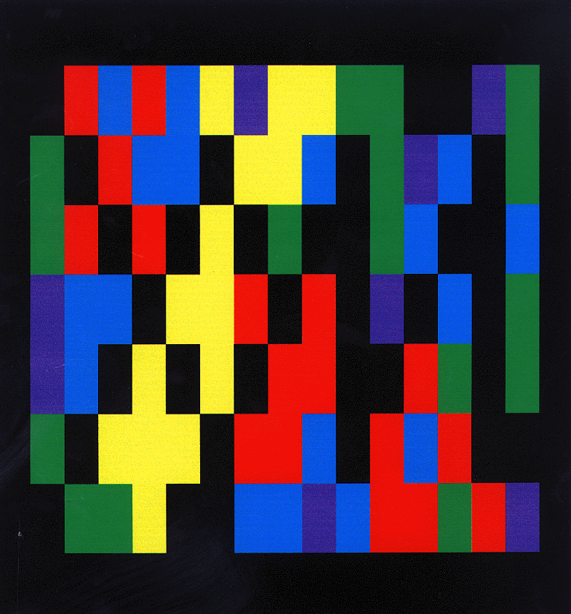
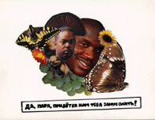
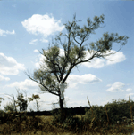
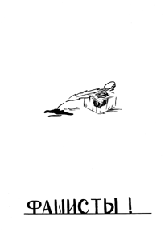
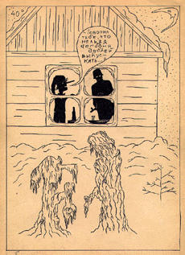
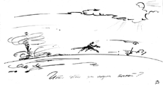

Презентации Журнала ПГ, или Как мы
опозорились. В феврале 1999 года
редакция Журнала ПГ презентовала первый номер -
четыре раза в Москве, один в Питере. 5.02 - в клубе
О.Г.И. прошла выставка ПГ-Kunst, а также концерты П.Г.
Короленко и А.Дельфина; 12.02 - в книжном магазине
"ПанГлосс" состоялись ПГ-Чтения и второй
концерт П.Г.Короленко; 21.02 - dub-вечеринка в клубе
"Территория", участвовали ди-джей MONO, ди-джей
Чагин, "Подвиг Гастелло", DUB TV & Доктор
Айболит; 27.02 - выставка ПГ-Freundschaft в галерее Spider &
Mouse, которую в торжественно-митинговой
обстановке открыл наш зарубежный гость д-р Йовиш
Кипурт, гражданин мира. Потом мы уехали в Святой
Петербург.
Ниже приведена краткая хроника московских
событий.
5.02.99. Презентация Журнала ПГ в клубе О.Г.И.
Выставка ПГ-Kunst (куратор А.Черняк). Концерт
А.Дельфина. Концерт П.Г.Короленко. Боря
Спиридонов придумал, как оформить выставку - все
работы мы решили засунуть в пластиковые файлы.
Черняк в течение нескольких дней лихорадочно
скакал по городу, собирая работы. Окончательный
состав участников: Александр Дельфин, Алеша
Каталкин (13 лет), Владимир Костюков, Манюра
Митурич, Аркадий Насонов, ООО "Обледенение
Архитекторов" (Вознесенский, Кононенко,
Лейкин), Денис Салаутин, Андрей Соболев, Владимир
Федоров, Антон Черняк, группа ХУZ (Спиридонов,
Платонов, Ягубский). Художники представили
работы разных лет, в основном графику, но не
только. Например, Алеша Каталкин (13 лет) показал
московской интеллигенции кустарную поделку:
кухонную доску, раскрашенную в разные цвета.
ПГ приехало в О.Г.И. часам к двум. Дельфин с
Каталкиным привезли аппаратуру для концерта.
Черняк принялся прибивать степлером файлы к
стенам. Наш народный дружинник Иван Денисов
готовился к фэйс-контролю. Фальковский (как
выяснилось парой часов позже) прятался в одной из
близлежащих подворотен - он боится массовых
скоплений народа.
Последние файлы были прибиты уже на глазах
собиравшейся публики - Маша Шилова успела-таки
подвезти недостающее. Ей спасибо - она молодец и
всегда нам помогала. Народу в маленькое
помещение О.Г.И. набилось - ни шагу ступить, ни
смачно плюнуть. Мы вчетвером расселись на
маленькой сцене, увешанной красно-желто-зелеными
флагами. Была произнесена речь, потом
раздавались журналы. Тот, кто получал номер,
автоматически становился главным редактором -
его имя вписывалось в соответствующую графу на
четвертой обложке.
В разгар угара появился П.Г.Короленко с зеленым
лицом и в спецшляпе.
Тут как раз начался концерт - А.Дельфин
очень плохо исполнил свои песни под гитару. Одна
маленькая девочка танцевала. Танцевал и
журналист Сергей Кузнецов, как улыбчивый фавн.
Остальные давились. Потом выступил Короленко.
Похожий на вставшего из подземелья ребенка, он
включил фанеру и спел несколько хитов. Тут
начался лом, все танцевали. Танцевал и журналист
Сергей Кузнецов, как улыбчивый фавн.
Журналы закончились. Толпа рассосалась. В баре
подсчитывали выручку.
12.02.99. Презентация Журнала ПГ в книжном
магазине "ПангГлосс".
ПГ-Чтения. Выставка "Опять тройка" (куратор
А.Черняк).
Русский, немец и француз, директора
"Панглосса", пошли на риск. Они разрешили нам
провести презентацию Журнала ПГ, толком не
представляя, что это такое. Мы решили: будут
выставка и литературные чтения. Помещение
маленькое, и Черняк повесил три работы: руки и
шары от группы FENSO, изображение какой-то девочки
от "Облачной Комиссии" и собственноручный
портрет кроссовок "Nike". На
чтениях выступили: А.Дельфин со своими стишками,
И.Фальковский со своими жуками, неугомонный
А.Черняк со стихами своего друга Данилы. В финале
Андрей Соболев, художник и поэт, прочитал свои
замечательные тексты.
Публика издевательски хохотала.
В разгар позора появился П.Г.Короленко со
товарищи - все в ритуальных масках. После того,
как чтения завершились, Короленко блистательно
исполнил несколько номеров, аккомпанируя себе то
на пианино, то на табуретке, то на собственном
локте.
Потом мы раздавали журналы. Тот, кто получал
номер - см. выше. В течение всего вечера
российские и иностранные граждане выпивали
молдавское вино и закусывали армянской
чурчхелой - все это добро мы закупили совместно с
панглоссерами. Когда закончилась программа и
было выпито вино, индейцы смылись из вигвама. И
стало тихо и темно.
Приложение. Из прочитанного Андреем
Соболевым.
Жизнь в кармане
Один человек пожелал жить в кармане
собственных штанов. В ту же секунду его желание
исполнилось. Жить в кармане оказалось довольно
уютно. Человек обнаружил там
следующее:
будильник без часовой стрелки - 1шт.;
модель Северного Полюса - 1 шт.;
сыр голландский в неопределенном количестве;
свечу без подсвечника - 1,4 шт.;
карту местности - 1шт.;
полосы серой ткани - 14 шт.;
автомобиль марки "Победа" в гараже марки
"ГМП-5" - 1шт.;
плащ синей ткани - 1шт.;
портрет полководца Суворова в раме -2 шт.
муляж аллигатора - 1шт.;
труба жестяная - 1шт.;
подшивка газеты "Ваучер" за 1996 год - 1шт.;
галстук мужской со светофорами - 1шт.;
сковорода железная - 1шт.;
камни различной величины и породы - около 30 шт.
И еще кое что по мелочи.
Как я не стал писателем
8 февраля 1999 года пришло мое время стать
писателем. "Но писатель должен знать этот мир
как свои пять пальцев", - подумал я. А надо вам
заметить, что всю свою жизнь до 8 февраля 1999 года я
был сосредоточен на мыслях о Мире Горнем и,
конечно же, имел слабое представление о мире
дольнем. "В таком случае я стану писателем,
который пишет о Мире Горнем", - нашел я выход из
создавшегося положения. Но поразмыслив как
следует, я понял, что и о Мире Горнем я знаю не так
уж много, а то, что знаю я, и без того известно
человечеству.
Так я не стал писателем, но зато день 8 февраля 1999
года запомнил надолго.
21.02.99. Презентация Журнала ПГ в клубе
"Территория". Dub-вечеринка.
Клубный вечер провести - это не балдой трясти. Мы
пригласили группу "Карибасы" из Питера,
наврав, что оплатим билеты, но они не поверили и
не приехали. Тут выяснилось, что в Москве гостит
Доктор Айболит - один из родоначальников
русского реггей. И мы позвали его выступить
вместе с группой DUB TV под руководством Шуры
Антонова. Вместе с ними приехал великий музыкант
Дима Федосеев, человек, без которого
реггей-движение не имело бы шансов.
Вечеринка проходила так. На большом экране
показывали ПГ-СлайдВидеоФильм (режиссер Варвара
Авдюшко): крупным планом рожи участников ПГ, а
также политкорректные фото из горячих точек
мира, все вперемешку с архивным концертом
"Подвига Гастелло" в реггей-клубе Island (1995).
Ди-джей Юрий MONO блистательно играл дабы старой
школы. На этом фоне проходил неумелый конферанс
А.Дельфина, который призывал многочисленную
публику брать журналы. Тот, кто получал номер -
опять-таки см. выше. Потом за вертушки встал
Чагин, и тут Дельфина понесло. Он начал
кривляться, орать как оглашенный, призывать к
употреблению наркотиков и разврату малолетних.
Процитирую журнал "Птюч": "Дельфин долго и
немилосердно пилил наши уши под фонограмму, но
говорят, что когда он поет свои песни под гитару,
как Высоцкий, то это еще хуже". Как говорится,
ни убавить, ни прибавить.
Все это время Черняк, Каталкин и Фальковский
танцевали и веселились, вернее, делали вид, что им
весело. Конечно, над ними все смеялись, а один
лысый мужчина даже показывал пальцем. На
фэйс-контроле дежурил наш народный дружинник
Иван Денисов. Он выкидывал из клуба быков, как
собак нерезаных.
Потом началось главное. Шура Антонов забыл
тот самый единственный шнур, без которого нельзя
подключить грув-бокс. Через полчаса шнур нашелся.
К маленькому ди-джейскому пульту запаренный
Чагин чудом подключил целый бэнд - гитариста,
басиста, вокалиста и Шуру Антонова со
злополучным грув-боксом. После этого состоялся
великолепный концерт: Айболит пел как только он и
умеет, ему подпевала красивая девушка Нина (экс-Jah
Torch), в зале все позитивно вибрировали, даже
охранники улыбались. Музыканты играли целый час,
и это был лучший реггей-концерт за последние
годы, а такой толпы в воскресенье в
"Территории" просто не видали. Фальковский
потом говорил, что заранее знал - все так и будет,
но на самом деле он часа два прятался в одной из
близлежащих подворотен. Его с трудом нашли и
насильно привели в клуб.
Журналы закончились. Толпа рассосалась. В баре
подсчитывали выручку.
27.02.99. Презентация Журнала ПГ в галерее Spider &
Mouse. Выставка ПГ-Freundschaft. Выступление д-ра Йовиша
Кипурта, гражданина мира.
"Freundschaft f (-en) - дружба; mit jdm F. schliessen -
подружиться с кем-л.; freundschaftlich adj - дружественный,
дружеский."
PONS Standardwoerterbuch Russisch. Stuttgart-Muenchen-Duesseldorf-Leipzig: Ernst Klett
Verlag, 1996.
Тут рассказывать нечего - все сделали Черняк и
Каталкин. Фальковский весь день прятался в одной
из близлежащих подворотен, а Дельфин так
загордился после предыдущих концертов, что с
утра до вечера вертелся перед зеркалом и строил
гримасы. Однако сумел все же просунуть в
пресс-релиз один из своих стишков. Черняк опять
скакал по городу, высекая искры: он собирал
работы. В результате все выглядело так. Иван
Дмитриев представил потрясающую живопись -
английский пейзаж без названия. Аркадий Насонов
продемонстрировал работу из серии "Иногда
кажется" - дым, переходящий в облака на фоне
Луны. Группа FENSO (Д.Салаутин и Д.Файн) показала
психоделическую фотографию "Июльский
полдень"- человеческий кокон, приклеенный к
дереву. Андрей Соболев выступил с двумя
живописными работами - "Идеальный зритель" и
"PG-Boots". На последней были весьма реалистично
изображены ботинки Бори Спиридонова с
неприличными шнурками. Сами ботинки
выставлялись в центра зала на спецподиуме.
Группа XYZ представила также фотографию
неприличных сосисек. Вадим Фишкин поддержал
уровень выставки мастерской графикой из серии
"Небо" - "Ангел и Фабрика". Безусловным
хитом стала фоторабота Владимира Костюкова из
серии "Лесные истории" - энциклопедический
словарь с закладкой-усами. К сожалению, авторский
текст Костюкова выставить не удалось - это все
Черняк виноват. Он вообще очень переживал по
поводу своей кураторской деятельности, говорил,
что это полный провал и пора идти в тур-менеджеры.
Мы его отговорили, дали денег.
Выставку открыл наш зарубежный гость, д-р Йовиш
Кипурт, гражданин мира. Вот его речь:
"В той далекой жаркой стране, откуда я родом,
народ говорит: "Люди обманывают людей, и друзья
обманывают друзей, и враги обманывают врагов, и
боги обманывают богов".
Как преодолеть инерцию, энтропию, то, что мой друг
Рас Нама из Сенегала называл Babylon? Как преодолеть
обман, ненависть, то, что мой друг Рас Нама из
Сенегала называл Babylon? Как преодолеть конфликт,
напряжение, то, что мой друг Рас Нама из
Сенегала называл Babylon?
Чтобы преодолеть негативные вибрации,
необходимо практиковать позитивные вибрации.
Дружба - это позитивная вибрация. Любовь - это
позитивная вибрация. Искусство - это позитивная
вибрация. Я приехал из жаркого лета в холодную
Москву - и это тоже позитивная вибрация.
Мои друзья, молодые музыканты и художники,
поэты и журналисты, студенты и интеллектуалы,
артисты и врачи, во всех крупных городах, во всех
грязных мегаполисах, где я побывал за время моего
Путешествия, практикуют позитивные вибрации. Их
жизнь улучшилась. Они стали чувствовать себя
лучше. ПГ, мои друзья из Москвы, пригласили меня
сюда, и мне удалось приехать. Я пересек
двенадцать климатических поясов, я плыл, летел и
бежал, да простит мне JAH это небольшое
преувеличение, и вот я здесь, чтобы возвестить о
правильности позитивных вибраций.
Выставки, концерты, массовые движения,
культурный обмен - все это я называю способом
испытать позитивную вибрацию. Смешно, что
назвали выставку немецким словом Freundschaft - это
разрушает глупое представление о немецком языке
как о вечном языке третьего рейха. Роль которого
сегодня, к моему глубокому сожалению, скорее
играет ваш, русский язык.
Язык искусства - интернационален, как и музыки.
Оба они мультикультуральны, глобальны и
абсолютно легальны. Выставка, как вибрация
искусства и как одна из признанных - в случае
удачи - позитивных вибраций, прекрасное средство
для трансляции позитивных вибраций на весь мир.
Было приятно общаться с вами. Желаю здоровья и
удачи всем собравшимся в этом зале. Было крайне
приятно увидеть вас всех. Не падайте духом в нашей
вечной борьбе. Ваш субкоманданте Йовиш
Кипурт."
Приложение. Текст пресс-релиза выставки
ПГ-Freundschaft.
Однажды Йовиш Кипурт сказал сыну: "Дружба -
это миф. Дружбы нет. Миром правят деньги, разврат
и блат. Запомни это, дружок."
И мы помним эти слова. Когда нас спрашивают,
что такое дружба, мы хором говорим:"Дружба - это
миф. Дружбы нет. Миром правят деньги, разврат и
блат. Запомни это, брат."
Когда нас спрашивают, по какому принципу
подобрана экспозиция выставки, мы честно
отвечаем:"Наша экспозиция подобрана по блату.
Это не трудно заметить, ребята. Сначала мы по
знакомству организовали выставку в знаменитой
галерее, а потом, воспользовавшись нашими
связями, пригласили для участия одних
знаменитостей. Участники выставки не пацаны, а
партийные бонзы и паханы. Не какие-нибудь
клоуны-уркаганы, а мастера визуальной икебаны. Не
какие-то дурковатые отморозки, но поклонники
зеркала и расчески. Не эффектные
близнецы-акробаты, но знатоки тайн и духовные
солдаты."
На вопрос, что же все-таки, Что действительно
собрало нас всех вместе в этом месте, мы радостно
отвечаем:"ПГ-Freundschaft."
Москва. Май 1999. ПГ-Редакция. P.S.
Комментарий Антона Черняка, куратора всех
ПГ-Выставок.
Надо написать, видимо, что на выставках были
представлены наиболее интересные и актуальные
на настоящий момент работы авторов и
художественных объединений. Несмотря на ряд
практически непреодолимых преград и трудностей
это оказалось осуществлено. Конечно, не обошлось
без накладок. Например, во время выставки
ПГ-Freundschaft художник Иван Дмитриев и его семья не
смогли найти помещение галереи и около часа
блуждали на противоположной стороне
Ленинградского проспекта. Узнав об этом, я
пережил настоящую психотравму, после которой не
мог оправиться около двух месяцев. Лечился в ЦКБ.
Так, что еще? Пожалуй, этот опыт позволил мне
осознать широкие перспективы экспонирования и
позиционирования еще более молодых и тал антливых перцев. И использования в этих
целях более солидных выставочных залов и
галерей, в том числе зарубежных. Что по этому
поводу сказал бы Мизиано? Скорее всего, просто
сыто хмыкнул бы. Что по этому поводу сказал бы
Чубайс? Этот вопрос занимает меня не первый год,
оставаясь на сегодня полной загадкой. Надеюсь,
что эта тайна раскроется в ближайшие годы. антливых перцев. И использования в этих
целях более солидных выставочных залов и
галерей, в том числе зарубежных. Что по этому
поводу сказал бы Мизиано? Скорее всего, просто
сыто хмыкнул бы. Что по этому поводу сказал бы
Чубайс? Этот вопрос занимает меня не первый год,
оставаясь на сегодня полной загадкой. Надеюсь,
что эта тайна раскроется в ближайшие годы.
Ну, пару слов о художниках. Все они молодцы.
Хотелось бы их поблагодарить, пожелать еще
больше хороших картин, инсталляций, объектов и
перформенсов. Ну и надо как-то в общем-то будет
нам дальше взаимодействовать. Было бы приятно.
Ладно. Хватит болтать попусту. Сяду-ка я лучше,
напишу новый проэкт. Все, до свиданья. Не мешайте.
Я занят. Занят.
Москва, Китай-город. |